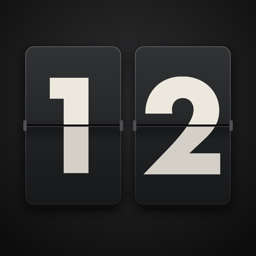

Flap ClockSupport
Need help, found a bug, or have an idea? Open a support request (a free GitHub account is needed), and you'll get a reply as soon as possible.
Common questions
Where are the settings?
Tap the board, then tap the gear in the top-right corner.
How do I choose what the rows show?
Touch and hold the board anywhere except the big clock flaps, or go to Settings > Arrange board. Swipe up or down on a row to move through what it shows, and use + or − to add or remove items.
How do I set a timer?
Swipe up or down on the big clock flaps (or touch and hold them). Drag the left flaps for minutes and the right flaps for seconds, then tap Start. Tap the board while it runs to pause or stop it.
Why does the timer chime when my phone is on silent?
Like the Clock app's timer, it plays even on silent, so you don't miss it. Turn your volume down to make it quieter. It's half as loud at night if "Dim at night" is on.
Why isn't the weather showing?
The app needs your approximate location to fetch the weather. Check Settings > Privacy & Security > Location Services > Flap Clock, and make sure you're online.
What do the camera ring's colors mean?
On iPhone Duo, the ring around the camera glows with the weather by default, and turns green, amber and red as a timer runs down. Settings has a key to every color, and you can switch the ring to the time of day or a color of your own.
Does it work on other iPhones?
Yes. It's designed for iPhone Duo standing in tent mode, and it runs on any iPhone in landscape.
Will it drain my battery?
The board dims when you're not looking and again after dark. For all-day use as a desk clock, keep your iPhone charging.